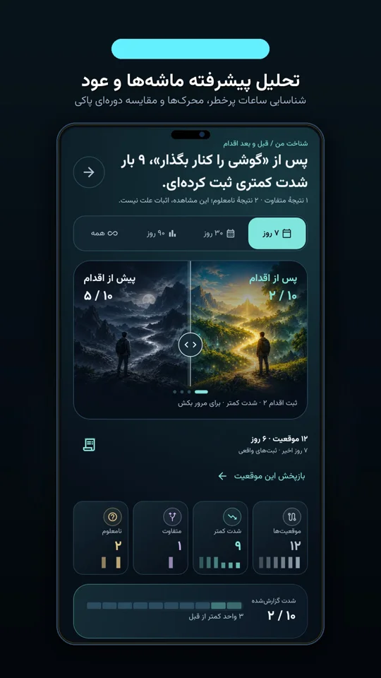

اصل طلایی دو روز اول
- شعار بزرگ نده: یک قانون کوچک برای امشب (مثل گوشی بیرون تخت) بهتر از ده قول برای کل سال است.
- برچسب «معتاد» نزن: بر اساس انگیزهٔ شخصی و کیفیت زندگیات هدفگذاری کن، نه از روی وحشت.
- ابزارت را آماده کن: دفترچهٔ یادداشت امن یا اپ آفلاین حاکم ذهن را کنار دستت بگذار.
۱. هدف را به یک رفتار قابل مشاهده تبدیل کن
مغز با عبارتهای مبهمی مثل «آدم بهتری میشوم» همکاری نمیکند. تصمیمت را روی یک موقعیت واقعی بنویس: «امشب بعد از ساعت ۲۳ گوشی را توی تخت نمیبرم و شارژر روی میز سالن میماند.» دلیل شخصی خودت را هم با یک جمله کنارش بگذار — مثلاً خواب عمیقتر، انرژی صبح یا آرامش وجدان. این هدف مال خودت است و نیازی نیست به کسی نشانش بدهی.
۲. یک ثبت کوتاه، بهجای قضاوت کلی
برای دو تا سه روز اول، هر بار موج میل آمد (چه انجام شد و چه رد شد) سه خط بنویس: ساعت چند بود، حست چی بود و یک کار قبلش چه بوده. این ثبت آزمون پزشکی یا نمرهٔ بالینی نیست؛ فقط آینهای برای دیدن الگوی پنهان روزت است.
«ساعت ۲۳:۴۰ بعد از کار طولانی خسته و بیحوصله گوشی را باز کردم. فردا ۲۳:۱۰ شارژر را کنار کتابخانه وصل میکنم.»

نمایش الگو بدون قضاوت
ساعتهای آسیبپذیر را روی نمودار ببین
بهجای حدسزدن یا صفرکردن خودت، بخش تحلیل اپلیکیشن حاکم ذهن نشان میدهد کدام ساعت شبانهروز، سطح خواب یا حالت روحی بیشترین همپوشانی را با وسوسههای تو داشته است.
۳. یک تغییر محیطی فوری انتخاب کن
پیشنهاد عمومی Mayo Clinic در کنار مراقبت تخصصی، توجه به موقعیتهای محرک، محدودکردن دسترسی در ساعات خطر و ساخت فعالیت جایگزین است (منبع: Diagnosis and treatment). لازم نیست کل زندگی را یکجا زیرورو کنی؛ از پرخطرترین ساعت روزت شروع کن و برای طراحی پاسخ لحظهای، راهنمای محرکها و وسوسه را ببین.
۴. اگر در ۴۸ ساعت اول از تصمیمت فاصله گرفتی
اگر همان شب اول طبق برنامه پیش نرفت، یعنی فقط یک بخش از محیطت را درست پیشبینی نکرده بودی. بهجای رهاکردن همهچیز، یک جمله بنویس: «برنامهٔ شبم روشن بود، اما برای تنهایی عصر آماده نبودم؛ فردا عصر ۳۰ دقیقه از اتاق بیرون میزنم.» جزئیات کامل عبور از لغزش در راهنمای ساعت اول بعد از لغزش هست.
همراه رایگان برای همین امروز
نسخهٔ ۱.۸ حاکم ذهن را رایگان از مایکت بگیر
با ثبت جداگانهٔ پورن و خودارضایی، ۳۰ گام روش آسان و ابزار SOS لحظهٔ وسوسه، از همان ساعت اول یک ساختار آرام روی گوشیات داشته باش.
۵. چه زمانی کمک تخصصی لازم است؟
اگر بارها احساس فقدان کنترل داشتی و خواب، شغل یا رابطهات آسیب دیده، گفتوگو با روانشناس یا روانپزشک واجد صلاحیت قدمی حرفهای و هوشمندانه است (منبع: Mayo Clinic — Symptoms and causes). حاکم ذهن ابزار خودمدیریتی است و مسیر ۲۰ هفتهای آن ساختار مطالعه و تمرین است، نه مدت تضمینی درمان.
پرسشهای پرتکرار دربارهٔ ۴۸ ساعت اول
مهمترین اقدام در ۴۸ ساعت اول ترک پورن و خودارضایی چیست؟
به جای قولهای بلندمدت، فقط یک تغییر محیطی مشخص در پرخطرترین ساعت شب انجام بده: گذاشتن گوشی بیرون از تخت و ثبت ساعت و احساس لحظهٔ وسوسه.
آیا برای شروع باید روز اول صددرصد بینقص باشد؟
خیر؛ هدف دو روز نخست شکستن چرخهٔ بهانهتراشی («از شنبه») و کشف محرک واقعی است. ثبت یک لغزش هم دادهٔ ارزشمندی برای تنظیم برنامهٔ فرداست.
بعد از دو روز اول کدام راهنما را دنبال کنم؟
برای رهایی از محتوای تصویری به راهنمای ترک پورن با روش آسان برو و برای مدیریت عادت شبانه نقشهٔ ۴ هفتهای ترک خودارضایی را کنار ثبت روزانهٔ اپ دنبال کن.
منابع و حدود این راهنما
محتوای آموزشی حاکم ذهن؛ بازبینی محتوایی در ۱۰ نوامبر ۲۰۲۶. این متن جایگزین تشخیص یا درمان بالینی نیست.